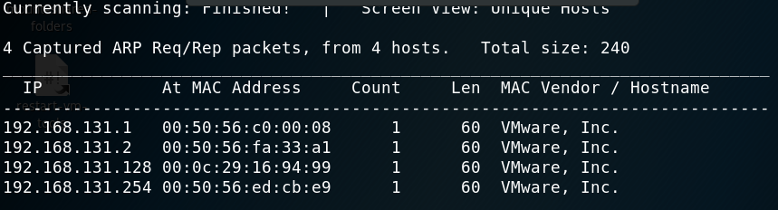

Different Ways to Capture IP Adresses in a local network
netdiscover -r 192.168.131.0/24


Nmap stands for Network Mapping
Nmap Stealth Scan (also known TCP SYN)
This used to identify open ports and services.
How to do this?
in normal with three hand shake these packets are sent SYN SYNACK ACK
in Stealth scan this become that ; SYN SYNACK RST because we dont want to estanblish a connection just are saying hi are you there?
So as the name implies stealth scan should be stealthly. But if target's security system is good then they can detect the scan but most of times they couldn't detect.

-T4 is a choice for speed. If speed was 1 (too slow) then detectability would raise. if speed was 5(most speed) then we might miss a port or information etc.
-p- this means that scan all of the ports (65535) if we say -p 80 then this would scan just port 80. if we don't write anything then it scans first 1000 ports.
-A meaning of that is scaning every aspects (OS detection , version detection) but OS information isn't accurate all the time.
Our job is look up and try to find exploit in these service's version etc.
nmap -sU -T4 192.168.57.134
this is udp scanning we got rid of -p- because there is not instant response time in udp so we would wait hours upon hours if we scan all the ports.